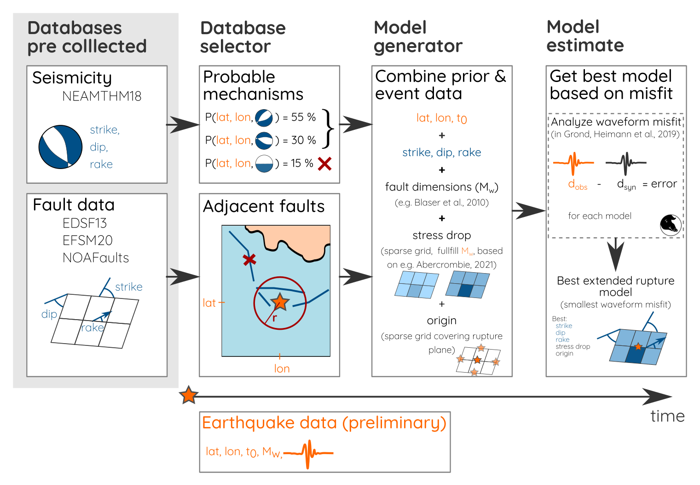
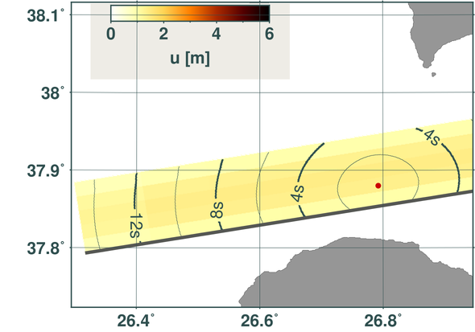

Automatic schemes of extended seismic source inversions for tsunami early warning
Malte Metz, Torsten Dahm, Simone Cesca, Rongjiang Wang, Sebastian Heimann, Marius Isken, Jacopo Selva, Alexander Garcia, Matteo Taroni
Link to presentation: maltemetz.github.io/esc2021/
Motivation
Faults - EDSF13 (Basili et al., 2013),
Seismicity - RCMT (Pondrelli, 2002)
Motivation - 2020 M\(_w\) 7.0 Samos
Motivation - 2020 M\(_w\) 7.0 Samos

Dogan et al., 2021
Increase speed and reliability of fast seismic source estimates for TEW
Increase speed and reliability of fast seismic source estimates for TEW
- Method I: IDS - Fast iterative deconvolution and stacking to estimate kinematic slip distribution
Zhang and Wang, 2014; 2015
Increase speed and reliability of fast seismic source estimates for TEW
- Method I: IDS - Fast iterative deconvolution and stacking to estimate kinematic slip distribution
Zhang and Wang, 2014; 2015 - Method II: Self similar dynamic rupture model with few parameters
Dahm et al., 2021
Increase speed and reliability of fast seismic source estimates for TEW
- Method I: IDS - Fast iterative deconvolution and stacking to estimate kinematic slip distribution
Zhang and Wang, 2014; 2015 - Method II: Self similar dynamic rupture model with few parameters
Dahm et al., 2021 - Implement a priori information to narrow search space
Increase speed and reliability of fast seismic source estimates for TEW
-
Method I: IDS - Fast iterative deconvolution and stacking to estimate kinematic slip distribution
Zhang and Wang, 2014; 2015 - Method II: Self similar dynamic rupture model with few parameters
Dahm et al., 2021 - Implement a priori information to narrow search space
Workflow - Fast self-similar source estimate

Case study - 2020 M\(_w\) 7.0 Samos
2020 M\(_w\) 7.0 Samos - Stations and Faults
MT from GEOFON; Faults from EDSF13; Stations from AFAD, KOERI, HL, NOA
Synthetic validation
| Input | Result adding 10% noise |  |
|---|
➞ Model procedure works
Synthetic validation
Synthetic validation
| IKAR (HRGNSS) | 0918 (SM) | BUHA (BB) | |
|---|---|---|---|
| Z |  |
 |
 |
| R |  |
 |
Real data application
| Result fast estimate |
Result full inversion |
|
|---|---|---|
|  | ||
| Run time | 80 min | 1087 min \(\approx\) 18 h |
| # models tested | 2236 | 30000 |
Real data application
| IKAR (HRGNSS) | 0918 (SM) | BUHA (BB) | |
|---|---|---|---|
| Z | |||
| R |
Outlook and Work in Progress
- Validate workflow with more synthetic tests cases and applications
➞ complex asperities, complex source geometries, location uncertainty - Speed up the process (goal for TEW: 5 - 10 minutes)
➞ multi-processing, remove redundant input models - Handle areas with little a priori information available
- Apply IDS method
➞ currently in progress